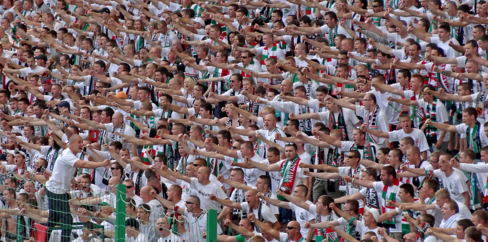
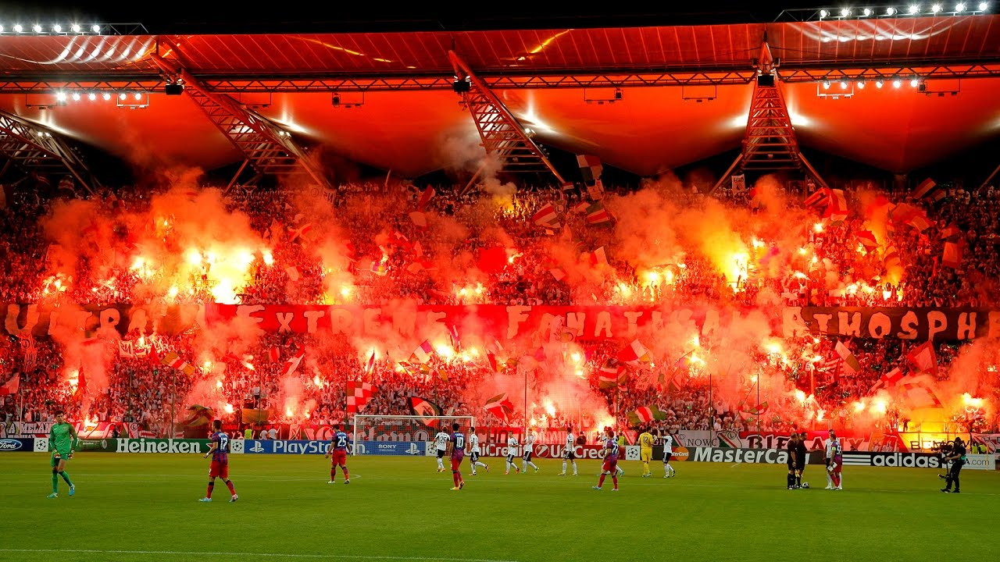
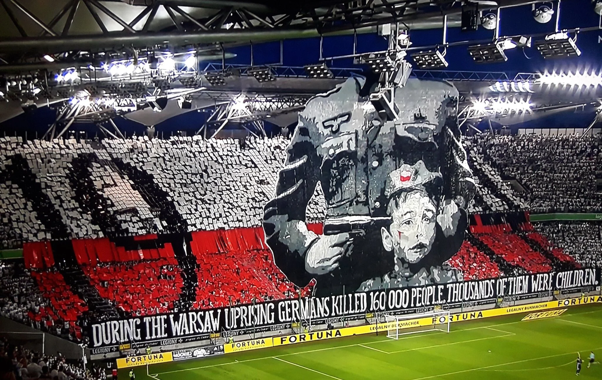

Legia Warsawa

Legia Warszawa har under det senaste decenniet cementerat sin position som en av de absolut främsta klubbarna i världen när det kommer till visuell läktarkultur. Deras hemmaarena är en plats för nästintill perfekt koordinerade koreografier, där supporterläktaren Żyleta agerar med en precision som påminner om en väloljad maskin. De är kända för att använda enorma banderoller med ofta provokativa eller politiska budskap som kombineras med rök och eld på ett sätt som gör dem till en ständig snackis i internationella medier.

Ljudbilden hos Legia är präglad av en rå, maskulin kraft och en taktfasthet som är sällsynt även på den högsta nivån. Supportrarna styrs av en "capo" som ser till att alla sjunger med samma intensitet, vilket resulterar i en aggressivt stöttande ljudvägg som aldrig tappar i tempo. Det finns en kollektiv stolthet i att vara "oönskade" av etablissemanget, vilket skapar en "vi mot världen"-mentalitet som förenar publiken och gör arenan till en extremt svårspelad plats för gästande lag.

Det som verkligen utmärker Legias atmosfär är hängivenheten även när resultaten går emot laget. Supportrarna ser sig själva som klubbens sanna väktare och deras närvaro är lika stark i en betydelselös ligamatch som i en avgörande Europacupmatch. Denna kompromisslösa lojalitet, parat med en extremt hög nivå på den visuella och vokala prestationen, gör att varje besök på Legias hemmaarena lämnar ett bestående intryck av kraft och organiserad passion.